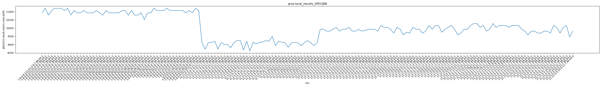
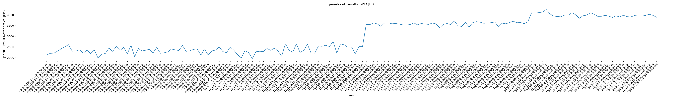

java- SPECJBB
Context at bottom
/home/jvanek/git/benchmarks-in-nested-virtualisation-toolchain/final_results/local_results/local_results_J2DBENCH
java-
SPECJBB
/home/jvanek/git/benchmarks-in-nested-virtualisation-toolchain/final_results/local_results/local_results_SPECJBB
java-
SPECJBB
local_results_SPECJBB
- local_results_SPECJBB - max-jops
- local_results_SPECJBB - critical jops
local_results_SPECJBB - max-jops
Expected number of java- JDKs: 37
1st avgmed_alljdks_metric:
/home/jvanek/git/benchmarks-in-nested-virtualisation-toolchain/final_results/result_processing.py /home/jvanek/git/benchmarks-in-nested-virtualisation-toolchain/final_results/local_results/local_results_SPECJBB jbb2015.result.metric.max-jOPS False
values: [10931, 11208, 10793, 11070, 11208, 11208, 11208, 11070, 11208, 10793, 11070, 10931, 10931, 11070, 10931, 10931, 10931, 11070, 10931, 10793, 11070, 10931, 10931, 10931, 10931, 11070, 11070, 10793, 11070, 10793, 10793, 10931, 10516, 10931, 10931, 11208, 11070, 11070, 11070, 11208, 11070, 11070, 11070, 11070, 11070, 10931, 11070, 10931, 11208, 11070, 9123, 8711, 9123, 9123, 9206, 8729, 9123, 9008, 9008, 8810, 9107, 9245, 9254, 8661, 9206, 8612, 9139, 9037, 9139, 9153, 9242, 9201, 9503, 8934, 9206, 9139, 9107, 8831, 9107, 9139, 9107, 8934, 9107, 9242, 9107, 8934, 9096, 9931, 9931, 9816, 9816, 9931, 10047, 9816, 9931, 9931, 10047, 9816, 9816, 9931, 9816, 9855, 9931, 9931, 9931, 9816, 10162, 10047, 10047, 9931, 9700, 10047, 9931, 9585, 9748, 9700, 10047, 9931, 9931, 9700, 9816, 10162, 9931, 10162, 10162, 9748, 9931, 10047, 10162, 9931, 9585, 9700, 9931, 9931, 10162, 10278, 10278, 10047, 10162, 9816, 9931, 10278, 10047, 10162, 10162, 10162, 10047, 10162, 10162, 10162, 9931, 9816, 9585, 9816, 9816, 9700, 9700, 9816, 9816, 9700, 10162, 10047, 9700, 10047, 10162, 9469, 9816]

Expected number of iterations: 5
final number of values: 167 out of 185
Pass rate: 90.3%
values: (8612, 11208, 10062.754491017964, 9931)

** accuracy from all jdks and runs
more is better
MIN: 8612
MAX: 11208
AVG: 10062.754491017964
MED: 9931
Relative differences 1:
MIN-MAX: 23.0 %
MIN-AVG: 14.0 %
MIN-MED: 13.0 %
MAX-MIN: -30.0 %
MAX-AVG: -11.0 %
MAX-MED: -13.0 %
AVG-MED: -1.0 %
stored to java-.properties. sort | uniq that!
2nd avgmed_by_jdk_metric:
values: [11042.0, 11097.4, 10986.6, 10931.2, 10958.8, 10959.2, 10820.4, 11125.2, 11070.0, 11042.0, 9057.2, 8935.6, 9094.6, 9016.0, 9217.2, 9064.6, 9099.4, 9015.0, 9885.0, 9954.4, 9846.8, 9954.2, 9954.4, 9802.2, 9908.0, 9986.8, 9885.0, 10116.0, 10046.8, 10116.0, 10046.6, 9723.4, 9908.2, 9838.8]
values: [11070, 11208, 10931, 10931, 10931, 11070, 10931, 11070, 11070, 11070, 9123, 9008, 9206, 9139, 9206, 9107, 9107, 9096, 9931, 9931, 9816, 9931, 10047, 9748, 9931, 9931, 9931, 10162, 10047, 10162, 10162, 9700, 9816, 9816]

values: (8935.6, 11125.2, 10044.264705882353, 9954.4)
values: (9008, 11208, 10068.70588235294, 9931)
** accuracy from all jdks where runs were avged
more is better
MIN: 8935.6
MAX: 11125.2
AVG: 10044.264705882353
MED: 9954.4
Relative differences 1:
MIN-MAX: 20.0 %
MIN-AVG: 11.0 %
MIN-MED: 10.0 %
MAX-MIN: -25.0 %
MAX-AVG: -11.0 %
MAX-MED: -12.0 %
AVG-MED: -1.0 %
stored to java-.properties. sort | uniq that!
** accuracy from all jdks where runs were medianed
more is better
MIN: 9008
MAX: 11208
AVG: 10068.70588235294
MED: 9931
Relative differences 1:
MIN-MAX: 20.0 %
MIN-AVG: 11.0 %
MIN-MED: 9.0 %
MAX-MIN: -24.0 %
MAX-AVG: -11.0 %
MAX-MED: -13.0 %
AVG-MED: -1.0 %
stored to java-.properties. sort | uniq that!
local_results_SPECJBB - critical jops
Expected number of java- JDKs: 37
1st avgmed_alljdks_metric:
/home/jvanek/git/benchmarks-in-nested-virtualisation-toolchain/final_results/result_processing.py /home/jvanek/git/benchmarks-in-nested-virtualisation-toolchain/final_results/local_results/local_results_SPECJBB jbb2015.result.metric.critical-jOPS False
values: [2117, 2199, 2209, 2302, 2415, 2510, 2605, 2299, 2309, 2365, 2210, 2350, 2189, 2356, 1989, 2159, 2193, 2442, 2293, 2521, 2336, 2476, 2186, 2570, 2041, 2427, 2313, 2346, 2391, 2221, 2476, 2202, 2226, 2267, 2401, 2364, 2331, 2570, 2293, 2319, 2384, 2413, 2115, 2408, 2118, 2314, 2353, 2500, 2282, 2232, 2497, 2342, 2136, 1988, 2326, 2237, 1957, 2275, 2297, 2285, 2426, 2342, 2438, 2315, 2064, 2647, 2351, 2251, 2641, 2243, 2333, 2625, 2213, 2206, 2540, 2530, 2578, 2518, 2755, 2215, 2640, 2599, 2486, 2501, 2180, 2514, 2514, 3552, 3544, 3626, 3577, 3462, 3621, 3629, 3583, 3598, 3568, 3532, 3523, 3552, 3621, 3533, 3598, 3570, 3555, 3618, 3578, 3399, 3554, 3596, 3547, 3719, 3486, 3459, 3649, 3433, 3637, 3683, 3658, 3606, 3619, 3635, 3667, 3441, 3613, 3582, 3641, 3705, 3632, 3644, 3589, 3679, 4098, 4086, 4107, 4132, 4251, 4047, 3946, 3924, 3909, 3989, 3990, 4099, 4003, 3840, 3959, 3987, 4098, 4040, 3931, 3933, 3979, 3942, 3878, 3953, 3904, 3980, 3918, 3904, 3967, 3951, 3948, 3971, 4030, 3979, 3890]

Expected number of iterations: 5
final number of values: 167 out of 185
Pass rate: 90.3%
values: (1957, 4251, 3022.682634730539, 2640)

** accuracy from all jdks and runs
more is better
MIN: 1957
MAX: 4251
AVG: 3022.682634730539
MED: 2640
Relative differences 1:
MIN-MAX: 54.0 %
MIN-AVG: 35.0 %
MIN-MED: 26.0 %
MAX-MIN: -117.0 %
MAX-AVG: -41.0 %
MAX-MED: -61.0 %
AVG-MED: -14.0 %
stored to java-.properties. sort | uniq that!
2nd avgmed_by_jdk_metric:
values: [2248.4, 2417.6, 2218.8, 2321.6, 2321.8, 2339.6, 2314.4, 2375.4, 2287.6, 2336.2, 2257.8, 2210.2, 2317.0, 2426.6, 2383.4, 2519.2, 2481.2, 2514.0, 3552.2, 3599.8, 3552.2, 3583.8, 3563.0, 3532.8, 3640.2, 3588.8, 3649.8, 4134.8, 3963.0, 3978.2, 3997.8, 3931.2, 3944.0, 3963.6]

values: [2209, 2365, 2210, 2293, 2336, 2346, 2267, 2331, 2384, 2314, 2326, 2275, 2342, 2351, 2333, 2530, 2501, 2514, 3552, 3598, 3533, 3578, 3554, 3486, 3635, 3613, 3644, 4107, 3946, 3990, 3987, 3942, 3951, 3971]

values: (2210.2, 4134.8, 3013.705882352941, 2519.2)
values: (2209, 4107, 3009.235294117647, 2530)

** accuracy from all jdks where runs were avged
more is better
MIN: 2210.2
MAX: 4134.8
AVG: 3013.705882352941
MED: 2519.2
Relative differences 1:
MIN-MAX: 47.0 %
MIN-AVG: 27.0 %
MIN-MED: 12.0 %
MAX-MIN: -87.0 %
MAX-AVG: -37.0 %
MAX-MED: -64.0 %
AVG-MED: -20.0 %
stored to java-.properties. sort | uniq that!
** accuracy from all jdks where runs were medianed
more is better
MIN: 2209
MAX: 4107
AVG: 3009.235294117647
MED: 2530
Relative differences 1:
MIN-MAX: 46.0 %
MIN-AVG: 27.0 %
MIN-MED: 13.0 %
MAX-MIN: -86.0 %
MAX-AVG: -36.0 %
MAX-MED: -62.0 %
AVG-MED: -19.0 %
stored to java-.properties. sort | uniq that!
/home/jvanek/git/benchmarks-in-nested-virtualisation-toolchain/final_results/local_results/local_results_RADARGUNs1
java-
SPECJBB
/home/jvanek/git/benchmarks-in-nested-virtualisation-toolchain/final_results/local_results/local_results_RADARGUNs3
java-
SPECJBB
/home/jvanek/git/benchmarks-in-nested-virtualisation-toolchain/final_results/local_results/local_results_JMH
java-
SPECJBB
/home/jvanek/git/benchmarks-in-nested-virtualisation-toolchain/final_results/local_results/local_results_DACAPO
java-
SPECJBB
pass rates:
local_results_SPECJBB=90.3%
Context:
- local_results
- SPECJBB